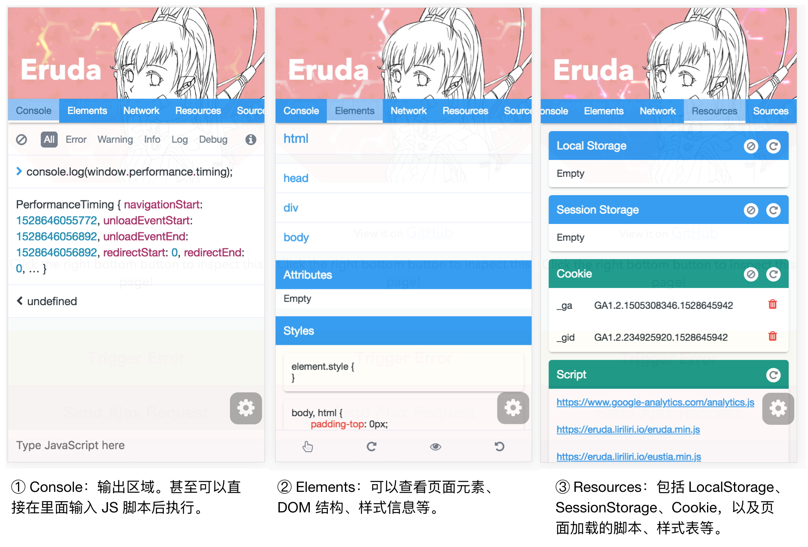

移动端 Web 页面调试
移动 web 页面输出工具
Eruda
Eruda 是一个专为手机网页前端设计的调试面板工具，类似 DevTools 的迷你版，其主要功能包括：捕获 console 日志、检查元素状态、捕获 XHR 请求、显示本地存储（localStorage）和 Cookie 信息等等。[1]

有两种接入 Eruda 的方式，一种是最简单的，直接在 HTML 模板中用 <script> 元素引用其 CDN 库，然后调用 eruda.init() 方法来初始化：
<script src="//cdn.jsdelivr.net/npm/eruda"></script>
<script>eruda.init();</script>
另外一种方式适用于使用了诸如 webpack 一类的构建工具的项目，可以给项目添加 eruda 的 npm 包：
$ npm install eruda --save
然后在页面的初始化脚本中手动启用 eruda：
import eruda from 'eruda'
eruda.init();
腾讯的 vConsole
腾讯也有一款类似的调试工具，vConsole[3]。引入的方式与 Eruda.js 类似，可以参考官方 Github[3]。
工作原理
Eruda 和 vConsole 采用重写浏览器原生 API 原型的方式来实现对网络、控制台相关方法的覆盖（override）。例如，Eruda 的 Network.js 会重写 XMLHttpRequest、window.fetch 的原型，如此一来，Eruda 就能够拦截到请求与响应的所有信息。
/**
* eruda/src/Network/Network.js
*/
export default class Network extends Tool {
overrideXhr() {
let winXhrProto = window.XMLHttpRequest.prototype;
let origOpen = winXhrProto.open;
let origSend = winXhrProto.send;
// 重写 open
winXhrProto.open = function(method, url) {
// eruda 本身会做一些事情
// 省略一些代码...
origOpen.apply(this, arguments);
};
// 重写 send
winXhrProto.send = function(data) {
// eruda 本身会做一些事情
// 省略一些代码...
origSend.apply(this, arguments);
}
}
在拦截到请求的头、响应后，Eruda 就可以利用相应的 Handlebars 模板来渲染视图了。
调试 webview
Android Webview
Chrome 浏览器的 Devtools 还可以调试安卓手机的系统浏览器页面，或者 APP 里的 webview。步骤如下：
- 确保安卓设备已经开启了开发者权限
- USB 数据线连接电脑时，选择“允许 USB 调试”，然后通过 APP 或者手机浏览器访问一些网页，例如
http://borninsummer.com/ - 与 Node.js 的调试类似，在电脑的 Chrome 浏览器中打开
chrome://inspect#devices页面，就可以看到当前的安卓设备通过 webview 打开的所有 web 页面，选择其中一个，点击inspect即可进行调试（注意，首次连接可能需要翻墙）：


微信网页
在国内的前端开发生态中，微信是不容忽视的一个运行环境。针对安卓微信，也可以使用 Chrome DevTools + USB 进行调试。
- 微信访问
http://debugx5.qq.com/，开启调试 - 手机开启开发者选项，开启 USB 调试
- 手机微信访问要调试的网页
- USB 连接电脑，电脑 Chrome 浏览器访问
chrome://inspect/#devices，即可看到手机设备及其打开的 webview，微信打开的页面通常会提示为WebView in com.tencent.mm(version)
iOS WKWebview
TODO: 用小可的手机试一下